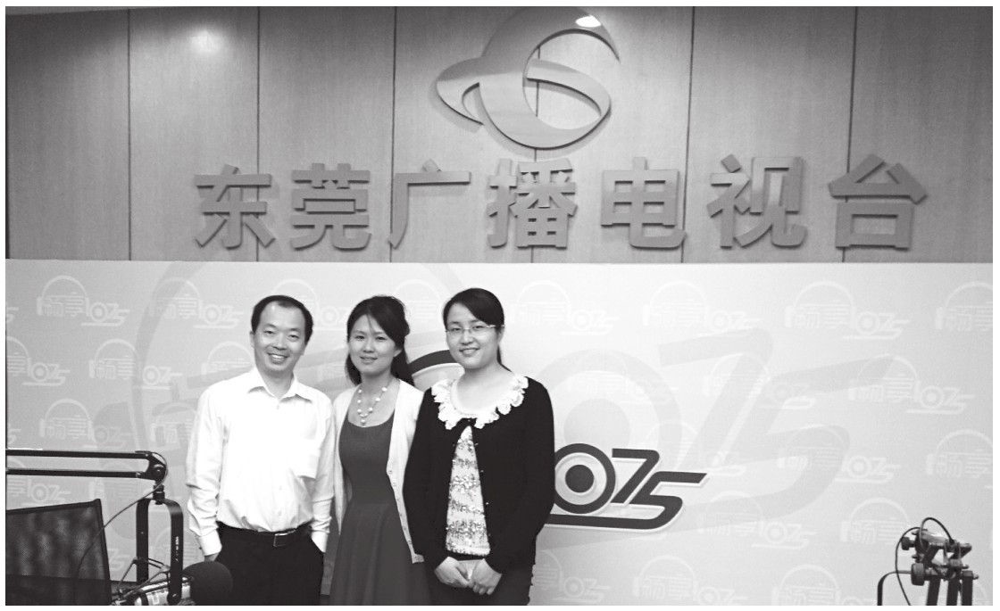

今天是母亲节，在此向全天下的母亲道一声节日快乐，也祝福天下所有的母亲健康长寿、美满幸福。在这个特殊的日子里，谈关于家庭教育的话题，我的确诚惶诚恐。一来我对家庭教育知之甚少，更只有短短一年不到的实战经验，二来在母亲节里谈这样一个话题，是“压力山大”的。毕竟，母亲对于一个孩子成长的重要性，岂是我这样一个大男人所能说清楚的？我只能从我的教育经历和一些阅读感悟谈谈感想，算是向伟大的母亲和母亲教育致敬。
一、从儿子学爬说起
儿子9个月了还不会爬，他喜欢被大人抱着，或者自己坐在垫子上玩玩具。如果你把他放到垫子上做爬行的姿势，他要么大声哭泣以示抗议，要么直接将头埋在垫子上拒绝爬行。看着孩子难受的样子，大人们紧张心疼地赶紧把他抱起来。后来，全家都开始慢慢接受儿子不会爬行这个事实了，还经常自我安慰道：不是每个孩子都会爬的吧；可能咱们孩子是剖宫产，所以不会爬行吧；可能孩子一直是奶粉喂养、母乳喝得少，所以不会爬行吧。总之，我们自己都在为孩子的不会爬行找理由，或者说将责任朝大人身上揽。
在多次阅读了解爬行对宝宝生长发育的重要性，比如对孩子活动能力的提升、健康状况的提升、应激能力的提升、社会交往能力的提升、脑神经发育的提升、表达能力和发声能力提升、意志力提升、自信力提升等都有非常重要的意义时，我太太毅然做出了一个决定，要不惜一切代价训练孩子的爬行能力。
过程当然是艰辛而且又挺纠结的，一般就是奶奶在宝宝后面推他的小脚，给他一个向前的助力，然后妈妈拿着玩具在前面引导，孩子就艰难地一边哭一边朝前“蠕动”。孩子如果完成了既定爬行距离，就给他一个拥抱和亲吻做奖励。如此反复，孩子先是坚决拒绝爬行，到慢慢向前蠕动，到可以用两只手臂匍匐前进，到现在四肢撑地快速爬行，我们大人也经历了一个从焦虑、担忧、忐忑、喜悦、幸福的心情变化。
以前的烦恼是，他不会爬；现在的烦恼是，他到处爬。
从这件事情，我的感触就是，孩子的潜力是无穷的，主要还看大人如何去帮助和发掘。如果我们一味地心疼孩子，或许孩子的某些能力就被无情地扼杀了。想起了一句话，“你们剪掉了我的翅膀，却又怪我不会飞翔”。记得曾经看过一则新闻，说某儿童医院举办宝宝爬行比赛，三成宝宝不会爬行，绝大多数宝宝都是原地玩耍，甚至个别宝宝原地趴着睡着了，这是不是也从另外一个侧面说明我们的家庭教育的某种缺失呢？
当然，在孩子学会爬行的过程中，我要特别感谢我的母亲和我的太太，是她们的不断坚持和努力，才让我们在育儿的第一步上取得成功。母亲，真的是家庭教育里不可或缺的一部分。
二、一位母亲的传奇教子经历
其实她是一位平凡的母亲，因为她是一个普通人，一个我身边的普通人。但她又是一位传奇的母亲，因为她对孩子的教育以及她在孩子成长过程中所扮演的角色和承担的责任。

作者携妻子（右一）在东莞广电做专题讲座
她是我的一名学生家长，一位独自带着孩子到东莞工作的单身妈妈。由于在怀孕期间不小心摔了一跤，导致孩子早产，女儿生下来后在体质上留下了一些遗憾，或者说一些小缺陷。再加上一个重男轻女的家庭氛围，倔强的年轻母亲毅然带着自己的女儿离开，独自来到东莞将孩子抚养长大。
据这位母亲介绍，当年物资匮乏、知识更匮乏，一个年轻的妈妈如何懂得养育孩子呢？她将有限的工资都拿来给孩子买奶粉，而自己每周末坐公交车到广州的书店看书，边看书边做笔记，抄录关于如何养育孩子的知识。因为她手头拮据，没有多余的钱去买书，只能抄书。那个时候既没有网络查资料，也没有高速公路到广州，所以她周末的时间就花在路上和书店里。就这样，当孩子长大到一两岁时，她已经抄录了几十本的育儿知识笔记。
十几年如一日，这位母亲不仅将女儿带大成人，而且将这个女儿教育得非常优秀，不仅能说会道、妙笔生花，而且乐观开朗、成绩优异。当年，她的女儿在东华的小升初考试中，被东华录取到了重点班学习。要知道，东华小升初考试的录取比例接近10：1，比高考录取的竞争还要残酷，她的孩子不仅能考上，而且还因为成绩突出被分到了我所教的班级里。更厉害的是，这个孩子不仅成绩优秀，而且她的知识面明显超出同龄人。她热心校园文化活动，后来还随学校辩论队拿到了东莞市校际辩论赛的冠军，而她自己也多次在社团活动中拿到这样那样的大奖，甚至还拿到全国生物奥赛的一等奖。高考后，孩子顺利考上了中国政法大学。
客观地讲，这个孩子没有超出常人的智力，相反在体质上还比别的孩子弱一些，同时又生活在一个父爱长期缺失的不完整的家庭里。但是，世界总给我们带来奇迹和惊喜，而这份惊喜的创造者就是一位伟大的母亲。
后来我和这位母亲成了朋友，她经常给我传授一些育儿的知识，每次我都汗流浃背、战战兢兢，因为在她的讲解下，我发现自己对孩子做的事情实在是少得可怜，而且还错了不少。
俗话说，母亲教育是“根”的教育。这位母亲给予孩子的，是我们能用语言形容的吗？是我们能够用数据考量的吗？母爱真的可以创造奇迹，母爱所带来的母亲教育，是如此博大精深，又力量无穷。
三、母亲角色定位与家庭教育
一位哲人说：大多数社会问题都是由脖子上挂着钥匙找不到妈妈的孩子造成的。“母子感通”是母亲与子女之间的一种天然感应，这种感应是父亲及其他家庭成员所不具备的，这是大自然赋予女性的特质。
母爱应该是一种最原始、最古老的情感。在最远古的时候，人类只知其母、不知其父。伴随着人类的繁衍生息，母爱在历史的长河中更加熠熠生辉，特别是母亲在家庭教育中所起到的作用，更是无法替代的，比如我们所熟知的典故孟母三迁、岳母刺字等等。但是在中国传统社会里，女性大多是没有接受过教育的家庭妇女，与孟子的母亲、岳飞的母亲这种知名女性相比，更多的是默默无闻的劳动妇女。但也正是这些所谓“没文化”“没知识”的女性们教育了一代又一代的中华儿女。那么她们是怎么教育孩子的呢？她们在家庭教育中又扮演了一个什么样的角色呢？
有这样一个故事。据说某地敬重关羽，爱屋及乌，修了一座关夫人庙。庙修好后，必须有副楹联，这难煞了一干人等。因为这位关夫人，史无记录，世无传闻。正当大家束手无策、无从下笔时，一个老学究站起来说，不妨这样写：
生何氏，殁何年，盖弗可考也；
夫尽忠，子尽孝，何不谓贤乎？
这对联的意思是：这位关夫人，姓什么，叫什么，生于何年何月，死于何年何日，都已经没有办法考查求证了。但她的丈夫关羽那么忠勇仁义，儿子关平、关兴是那么孝顺，作为相夫教子的关夫人能不是贤妻良母吗？通过这样的逻辑推理，从而赞扬了关夫人。在传统社会里，女性的主要工作就是相夫教子，如果丈夫和孩子都能取得成功，或者说成为一个善良的人、一个正直的人、一个勤劳的人、一个有作为的人、一个对社会有用的人，那么这位母亲就是成功的，她就已经是家庭教育中功劳最大的人了。
母亲在家庭教育中的角色定位，不是说她一定要给孩子讲多少大道理或者是替孩子讲解多少课本知识，而是她通过自己的善良、勤劳、朴实传递给孩子一种正能量。父亲在家庭里是精神领袖，把握大方向，而母亲则是道德模范，因为孩子往往跟母亲相处的时间更长一些，言传身教对孩子非常重要。
我看到另外一个故事。一位母亲看到5岁的孩子正在骑着邻居家孩子的童车，便对孩子说：“你不能随便动别人的东西。”孩子辩解道：“他跟妈妈去公园了，他现在不用这辆车。”孩子认为自己这样做没什么不对，因为他的朋友不会介意的。但这位母亲坚持让孩子把童车送回去，并试着说服孩子：“在没有经过他人的同意时，使用他人的财物是不对的。”孩子反问道：“可是，妈妈，你怎么就可以在爸爸没看见时，随便翻他的包呢？”当然，这是一个网络段子，一个笑话，但是这却不失为一个母亲在家庭教育中应该怎么做的一个经典案例。对于孩子来讲，他们最好的道德指南是母亲自身的行为。如果母亲教育孩子的语言与她的行为产生矛盾时，孩子就会失去行为的向导，变得很迷茫。因此，无论是心理素质，还是道德素质，母亲都要为孩子做出好的榜样。这也是母亲教育的一个很核心的问题。
当然，时代在变，母亲教育已经变成了一个动态的教育概念。《东方教育时报》曾经做了一个关于家庭教育的问卷调查，调查显示，在家庭中承担家庭教育主要职责的父亲仅占30.6%，在平常负责与学校联系的角色中，父亲仅占27.1%，而主要承担家庭教育职责的母亲占到了62.4%，平常主要负责与学校联系的母亲占到了63%。我以我做老师的经历为例，开家长会时，来开会的三分之二以上的是母亲，平时和老师沟通孩子情况的也三分之二以上是母亲。这也彰显，母亲在家庭教育中越来越突出的位置。
家庭是人生的第一所学校，也是人生永远的学校。母亲是人生的第一任教师，也是人生永远的教师。每个人的生命直接来源于母亲，母亲的素质直接关系到子女素质之高低，品行之优劣，事业之成败。从十月怀胎到婴儿的哺乳，从牙牙学语到蹒跚学步，一个人身体素质如何，取决于母亲的精心照顾；一个人智力的高低，取决于母亲的启蒙教育；一个人品德的好坏，取决于母亲的教诲；一个人的为人处世，取决于母亲的言传身教。
母亲是推动社会发展的核动力。母亲培养自己的子女，也是为社会培养公民，为民族培养未来，所以母亲在一定程度上决定民族、社会、国家的希望。让我们再次向伟大的母亲致敬！